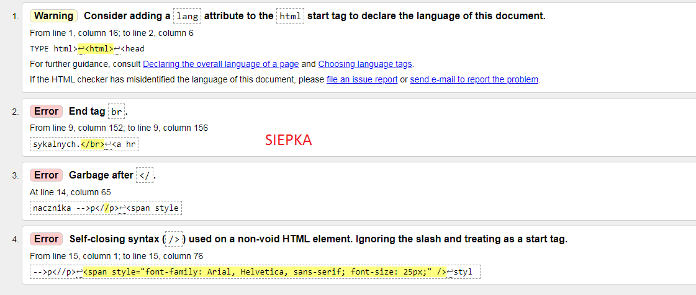
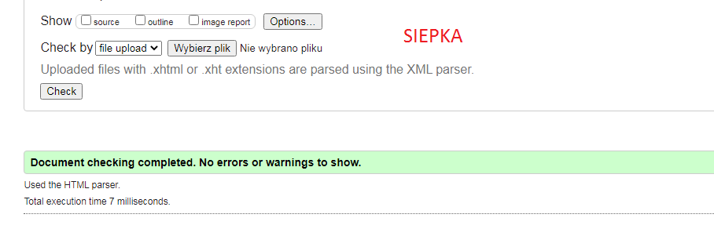

Walidacja strony html i css służ do sprawdzania znaczników HTML na stronie internetowej pod kątem ewentualnych błędów składniowych i leksykalnych.
Walidacja CSS służy do pomaganie projektantom stron i deweloperom w weryfikacji Kaskadowych Arkuszy Stylów
Link do strony z walidatorem


styl wpisany wielkosc 40 pikseli
styl wpisany wieloscia standardowa z uzyciem znacznika -->p
styl wpisany wielkosc 25 pikseli
styl wpisany wieloscia standardowa-->span